Consider the sample space {1,2,3,4,5,6,7,8,9}. Let A = {2,4,6,8}, B = {3,6,9}, C = {2,3,5,7}. Assuming that all outcomes 1,…,9 are equally likely, write down the sets for the following outcomes and calculate their probabilities.
-
A and B. A and B is the event {6}, which has probability 1/9.
-
C or A. C or A is the event {2,3,4,5,6,7,8}, which has probability 7/9.
-
AC (the complement of A). AC is the event {1,3,5,7,9}, which has probability 5/9.
-
B but not C. B but not C is the event {6,9}, which has probability 2/9.
Next, answer the following questions.
-
What are the probabilities P(A|C) and P(A|B)?
P(A|C) = P(AANDC)∕P(C) = (1∕9)∕(4∕9) = 1∕4.
P(A|B) = P(AANDB)∕P(B) = (1∕9)∕(3∕9) = 1∕3.
-
Which pairs of A, B,C are independent?
We answer this by attempting to apply the multiplication rule, and seeing if it works. Firstly, P(A)P(B) = (4∕9)(3∕9) = 4∕27, but P(AANDB) = 1∕9, so A and B are not independent. Similarly, P(A)P(C) = (4∕9)(4∕9) = 16∕81, but P(AANDC) = 1∕9,so A and C are not indepndent. Finally, P(B)P(C) = (3∕9)(4∕9) = 4∕27, but P(BandC) = 1∕9, so B and C are also not independent.
A traffic calming taskforce set up a speed camera at the entrance to local village Esh Losing. The speed limit at this point is 30mph.
After a month of measuring, the taskforce conclude that the speed of cars entering Esh Losing is distributed normally, with a mean of 33mph and a standard deviation of 2.8mph.
A speed camera is then set up in secret outside Esh Losing. The camera takes a photo of the registration plate of any car travelling at more than 35mph as they enter the village, and a ticket is issued to the registered owner.
-
What is the probability a car entering Esh Losing gets a ticket issued?
Let X ~ N(33,2.82) represent the random speed of a car. We can answer this question by performing standardisation. We have
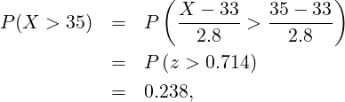where the last equality comes from looking up the probability a standard normal realisation is more than 0.714.
-
A ticket is issued to a car’s owner. What is the probability that the car was detected as travelling at more than 40mph?
We can answer this question by applying the definition of conditional probability to P(X > 40|X > 35):
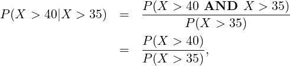since a car going at over 40mph must also be going over 35mph.
we already know the value of P(X > 35).
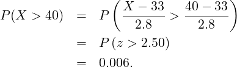Hence
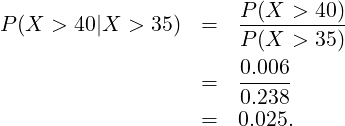
Every week day, when I get up, I make breakfast for my dog Quiz (pictured). Quiz’s breakfast is supposed to be 80g of biscuits and 150g of meat, but I’m a bit haphazard with my measures.

Assume the average amount of biscuits I give Quiz for breakfast is 80g, with a standard deviation of 5g. Assume the average weight of meat I give Quiz for breakfast is 150g, with a standard deviation of 8g. Assume the amount of biscuits and the weight of meat are independent to each other, and that each day’s amounts are independent of any other day.
-
What is the mean and standard deviation of the total weight of Quiz’s daily breakfast?
Let X be the random variable representing how many biscuits Quiz gets on a weekday morning, in grammes. Let Y be the random variable representing how much meat Quiz gets on a weekday morning, also in grammes. We are told we can assume X and Y are independent.
We know E(X + Y ) = E(X) + E(Y ) is always true, and Var(X + Y ) = Var(X) + Var(Y ) when X and Y are independent, as they are here. We also have that 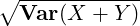 = SD(X + Y ) Combining all this gives us
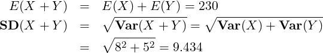 -
What is the mean and standard deviation of the total weight of Quiz’s breakfast over five week days?
We now simply find E(5X + 5Y ) and SD(5X + 5Y )
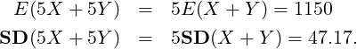
On weekends, my partner makes Quiz his breakfast instead. She is more reliable than me. Assume the average amount of biscuits she gives Quiz for breakfast is 80g, with a standard deviation of 2g. Assume the average weight of meat she gives Quiz for breakfast is 150g, with a standard deviation of 3g. Assume that the same independence results as above hold for these breakfasts, and that the breakfasts my partner serves Quiz are independent of the ones I serve him.
-
What is the mean and standard deviation of the total weight of Quiz’s breakfast over an entire week (five week days and two weekend days)?
Let X2 be the random variable representing how many biscuits Quiz gets in on a weekend morning, in grammes. Let Y 2 be the random variable representing how much meat Quiz gets on a weekend morning, also in grammes. We are told we can assume X2 and Y 2 are independent of each other, and of X and Y .
We want to find E(5X +5Y +2X1+2Y 1) and SD(5X +5Y + 2X1+2Y 1). We can use the same equations as previously:
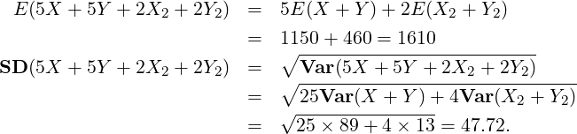 -
I decide to stop measuring out biscuits and meat independently, instead trying to measure out less meat than usual if I think I’ve measured our more biscuits than usual. What effect will that have on the covariance between biscuit weight and meat weight?
Under this new approach, a higher than average value of X is expected to lead to a lower than average value of Y . This will change the covariance from 0 (from when X and Y were independent) to being negative.
A probability professor sets the same online quiz every year for her students. She knows (by looking at submissions from previous years), students have a 10% probability of scoring full marks. She also knows that there is a 1% probability a student will cheat.
The professor marks the first submission to the online quiz, and gives it full marks.
-
Let C be the event a student cheats, and let F be the event a student scores full marks on the online quiz. What would be a sensible probability value for P(F|C), and why?
Essentially any value higher than 0.1 would be defensible here, on the assumption that a student is more likely to get full marks if they cheat than if they don’t (though I have occasionally seen students copy embarrassingly obvious wrong answers from their friends and hand them in). Assuming there are accurate “cheat sheets” available for the professor’s module, it wouldn’t be unreasonable to assume P(F|C) = 1. Certainly, that makes the maths easier.
-
Using your value for P(F|C), find P(C|F).
We can use Bayes Theorem here.
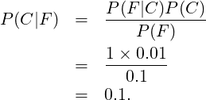
(Tricky!) It is the year 2090, and some human beings are being born with the Y-gene, a genetic mutation which gives people superpowers on their 18th birthday. Professor Y is attempting to create a test that can be used to check whether someone younger than 18 has the Y gene. The test will return either a positive result (suggesting the test subject has the Y-gene), or a negative result (suggesting the test subject does not have the Y-gene).
Only 0.01% of the population have the Y-gene. Professor Y’s test is 90% accurate, meaning 90% of people with the Y-gene get a positive result, and 90% of people without the Y-gene get a negative result.
Local youth Scat Sombers is given the test, which comes back positive.
-
What is the probability Scat Sombers has the Y-gene?
We can use Bayes Theorem here again, but with a bit of a wrinkle. We’ll let Y represent the event of someone having the Y gene, and + represent the event of a positive test. We know P(Y ) = 0.0001 and P(+|Y ) = 0.9.
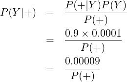So how do we find the probability of a positive result? This is a bit tricky, perhaps, because the probability of a positive result depends on whether the person being tested has the Y-gene or not!
Happily, we can use the additive rule to come to our rescue. The probability of a positive result must equal the probability of a positive result AND a Y-gene, plus the probability of a positive result AND no Y-gene:
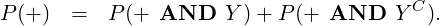We also know from how conditional probabilities work that
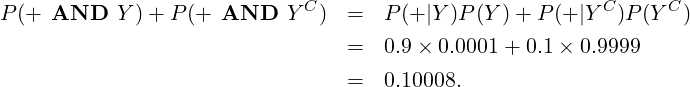Note how close this value is to 0.1. This is because the Y-gene is so rare, the probabilities related to it are barely noticeable. The vast majority of people have no Y-gene, and those people have a 10% probability of a positive result. Hence, the overall probability of someone getting a positive result must be very close to 10% as well.
We can now find the probability we were asked for:
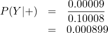So Scat is about nine times more likely to have the Y-gene after a positive test than before the test was administered. That’s not a trivial difference, but he’s still much more likely to not have the Y-gene than to have it.
-
Professor X runs the test on Scat Sombers a second time, and receives another positive result. Assuming that the test results are independent on each other, conditional on whether or not Scat has the Y-gene, what is now the probability Scat Sombers has the Y-gene?
We can answer this question in quite a similar way to how we answered the last one. Let ++ be the event of two positive tests in a row. We are told we have independence of trials conditional on whether Scat has the Y-gene. This means that P(+ + |Y ) = P(+|Y )P(+|Y ) and P(+ + |Y C) = P(+|Y C)P(+|Y C). Note that it doesn’t mean P(++) = P(+)P(+). Every positive test makes it more likely Scat has the Y-gene, so the more positive tests we get in a row, the bigger P(+) gets for the next test. This is one of those situations in which random events become independent when you learn (or in this case assume) an additional piece of information.
We now use

So now Scat is about 80 times more likely to have the Y-gene after two positive test than before either test was administered. Even after two tests, though, there is still more than a 99% chance he doesn’t have the Y-gene.